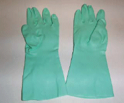
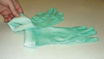
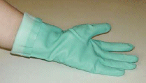
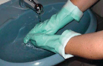
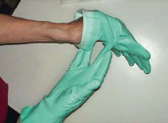
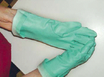
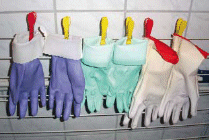

| 1. |
| Medizinische Einmalhandschuhe und Lederhandschuhe sind für den Umgang mit Chemikalien nicht geeignet, sondern nur Chemikalienschutzhandschuhe. |
 |
|
| 2. |
Handschuhe vor dem Tragen auf Beschädigungen prüfen. |
| 3. |
Bevor die Handschuhe angezogen werden, sind die Hände gründlich zu säubern und zu trocknen.
|
| 4. |
Lange Fingernägel sowie Schmuck können Schutzhandschuhe beschädigen. |
| 5. |
Bei Überkopfarbeiten sind die Handschuhstulpen umzuschlagen, damit Gefahrstoffe nicht in den Handschuh laufen können (Regenrinneneffekt). Manschette umstülpen. |
| |
 |
 |
|
| 6. |
Dieselben Schutzhandschuhe nicht zu lange tragen, Schutzhandschuhe wechseln oder zwischendurch Tätigkeiten ausführen, bei denen keine Schutzhandschuhe getragen werden müssen. |
| 7. |
Schutzhandschuhe vor dem Ausziehen reinigen
- Bei Verwendung von Lösemitteln mit trockenem Tuch abwischen.
- Bei Verwendung von Säuren oder alkalihaltigen Produkten: Schutzhandschuhe unter dem Wasserhahn abspülen und mit einem sauberen Tuch abtrocknen.
|
 |
|
| 8. |
Schutzhandschuhe ausziehen, ohne die Außenfläche mit bloßer Hand zu berühren
- Beim Ausziehen kontaminierter Schutzhandschuhe ist das Berühren der Handschuhaußenfläche mit der ungeschützten Hand zu vermeiden.
|
| |
 |
 |
|
| 9. |
Bei Bedarf nach Ausziehen der Handschuhe eine Handcreme auftragen; der Hautschutzplan muss beachtet werden. |
| 10. |
Schutzhandschuhe nur gemäß der Pflegeanweisung des Herstellers reinigen, lagern und gegebenenfalls nochmals verwenden. |
| 11. |
| Vor Wiederverwendung, Schutzhandschuhe trocknen lassen. |
 |
|
| 12. |
Nur einwandfreie Schutzhandschuhe wieder verwenden:
- Schutzhandschuhe dürfen keine Abplatzungen, Risse oder Löcher haben.
- Schutzhandschuhe dürfen keine Verfärbungen haben oder spröde sein.
|
| 13. |
Verunreinigte Schutzhandschuhe vorschriftsmäßig entsorgen
(Herstellerinformation sowie regionale Entsorgungsvorschriften beachten). |